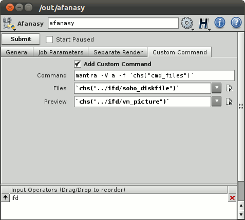
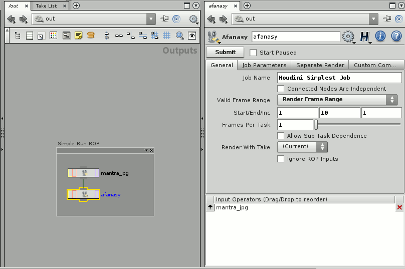
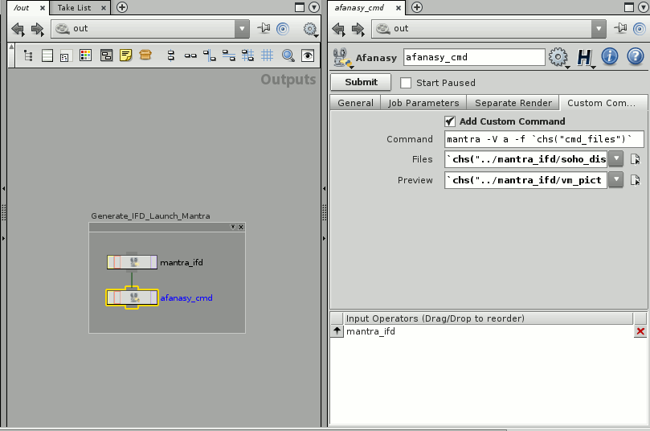
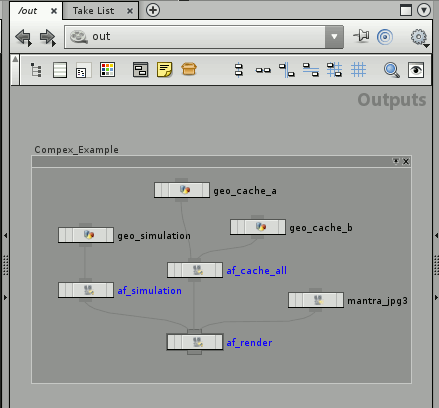
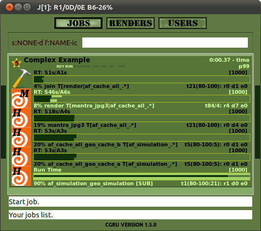

Afanasy in Houdini
Afanasy is represented by a special multi-functional ROP.
You can connect several other ROP nodes to Afanasy ROP to render.
You can connect several Afanasy ROP nodes to Afanasy ROP to setup render parameters.
General Parameters
 |
Job Parameters
 |
Separate Render
 |
Custom Command
 |
- Submit - Generate a job and send it to server.
- Start Paused - Send a job in off-line state.
General Parameters
- Job Name - Afanasy job name. Default is $HIPNAME.$OS = [hip scene name].[afanasy ROP name].
- Connected Nodes Are Independent - Allow run the same frames of all connected nodes at the same time.
- Valid Frame Range:
- Render Any Frame - Use frame range form downstream node. Or render current frame if no range in network defined.
- Render Frame Range - Render this specified frame range.
- Render Frame Range Only (Strict) - Render this specified frame range. Other ROPs will wait this whole frame range rendered.
- Frames Per Task - Number of frames in each task.
- Allow Sub-Task Dependence - Tasks can wait other tasks to be done partially.
- Render With Take - Specify take to render.
- Ignore ROP Inputs - Do not execute input ROPs.
Job Parameters
- Platform - OS type the job can launch tasks on: 'any' - any OS, 'Native' - the same as the script was launched on.
- Enable Extended Parameters - To 'switch on|off' it fast.
- Depend Mask - Same user jobs names pattern to wait to be done to start (empty value means not to wait any job).
- Global Depend Mask - Same as Depend Mask, but waits for a jobs from any user.
- Priority - Job order in user jobs list ('-1' means to keep this value default).
- Maximum Running Tasks - Maximum tasks job can run at the same time ('-1' means no limit - default value).
- Capacity - Tasks capacity value ('-1' means to keep this value default). Render must have enough free capacity to run it.
- Capacity Coefficient - Tasks capacity variation minimum and maximum coefficients.
If at least one of it not '-1' block can variate capacity ('-1' and '0' values means no limit for maximum).
Afanasy will change render command if there is enough free capacity on render.
Works only with 'Mantra' ROP through changing command by specifying number of threads to use ('mantra -j').
- Hosts Mask - Hosts names pattern where job can run on (empty value means that job can run on host with any name).
- Hosts Mask Exclude - Hosts names pattern where job can not run on.
Separate Render
Separate Render allows to separate render process on IFD files generation and render it by 'mantra'.
It can give several advantages on some 'heavy' scenes.
It generates a job which can:
-
Render images locally in temporary folder and copy whole image after successful render.
It can save your network traffic as render do not send small portions of an image during render process.
-
Generate IFD file locally and then render it in separate process but in the same task.
It can save render memory.
-
Split one frame on tiles to render them simultaneously.
So you can increase speed of one frame render.
And also it can reduce memory needed to render a frame.
-
Cleanup rendered IFD files and joined tiles images.
An utility to join EXR file tiles is provided with CGRU.
It can join EXR files with any number of custom channels.
- Enable Separate Render - Turn this feature on.
- Run ROP - Run ROP to generate files to render. Houdini will generate IFD files for mantra.
- Read Parameters from ROP - Read files to generate and images to render parameters from specified ROP.
- Render Arguments - Arguments for render command. Usually files and may be some other options.
- Files - Files to generate.
- Images - Images which render will produce. Needed for tile render, AfWatch preview.
- Use Temp Images Folder - Render locally in temp directory and then copy entire image in destination folder.
- Delete ROP Files - Delete ROP generated files (IFD) after render.
- Tile Render - Enable rendering tiles and then combine them.
- Divisions - Tiles divisions.
- Join Render Stages - Generate IFD files and render in the same task.
In this case IFD files will be generated to local temporary folder.
It can save and memory usage and network traffic.
Custom Command
Run any custom command.
For example you can render IFD files using 'mantra' command.
- Add Custom Command - Add custom command tasks block to a job.
- Name - Tasks block name. If empty the first word of the command will be used.
- Command - The command.
- Service - Tasks block service. If empty the first word of the command will be used.
- Files - Some files you can point to use in command.
- Preview - Specify result picture here to enable tasks preview.
- Prefix with $AF_CMD_PREFIX - Add $AF_CMD_PREFIX environment variable value to the beginning of the command.
This may be needed for some software (evironment) setup.
Examples:
Simple Run ROP:
The simplest way to render with Afanasy is to connect 'afanasy' ROP to your render ROP.
ROP Network Parameters:

|
Watch Jobs:

|
Watch Tasks:

|
The job consists of single tasks block.
Each task represents a frame or several number of frames, specified in 'Frames Per Task' parameter.
Command Render:
You can send any custom command to your farm.
Usually you need separate IFD files generation and run 'mantra' as a standalone process.
ROP Network Parameters:

|
Watch Jobs:

|
Watch Tasks:

|
This job consists of two blocks of tasks.
The first block produced by 'mantra_ifd' node, with 'Disk File' parameter turned on.
Next block runs 'mantra' with 'files' parameter pointing to the generated files.
Tile Render:
You can split single image to render on several hosts.
Each host (task) will produce a 'tile' - some part of an image.
Tiles will be combined in a single image.
ROP Network Parameters:

|
Tile Job:

|
Tile Tasks:

|
Tile job consists of three blocks:
- Generate - Generate IFD files.
- Render - Render tiles with 'mantra' standalone process.
- Join - Join tiles to assemble an image.
If tiles were successfully joined they will be removed.
At the end of this stage, IFD will be removed, if it was asked.
An utility to join EXR files is provided with CGRU.
Sub Task Dependence:
This option "Allow Sub-Task Dependence" can be useful with simulations.
Simulation calculations runs as one task.
So render tasks need to wait whole frame range simulated.
With this option frames begin to render as they already simulated while the entire simulation task is not finished at all.
ROP Network Parameters:

|
Sub-Task Job:

|
Sub-Task Tasks:

|
The first block of a job is a simulation. It consists of a single task ('Frames Per Task' parameter is set to the whole frame range).
The second block set to wait the first one with sub-task dependence.
So it begins to render as first frames of a simulation completed, while the simulation task is still running.
Complex Example:
You can connect any number of ROP nodes to construct a complex job.
ROP Network:

|
Afanasy Job:

|
This job consists of a simulation with sub-task dependence.
Two caches waiting the simulation, but cat run independently from each other.
Mantra tile render which produces three blocks which wait all the cache.
Two blocks for preview which can run independently but wait tile render tasks.
One to convert EXR files to JPEGs and one to generate a preview movie form EXRs.
This examples are provided with CGRU.
|